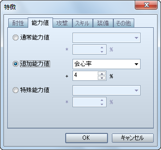
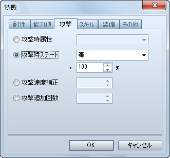

武器の命中率の設定方法です。
［武器］特徴 − 能力値 − 追加能力値 − 命中率
両手持ちの武器を作成する場合の設定方法です。
［武器］特徴 − 装備 − 装備封印 − 盾

敏捷性に関係なく、ターンの最初に攻撃出来る武器を作成する場合の設定方法です。
［武器］特徴 − 攻撃 − 攻撃速度補正

通常攻撃 1 回につき、2 回ダメージを与える武器を作成する場合の設定方法です。
［武器］特徴 − 攻撃 − 攻撃追加回数

会心の一撃（VX では「クリティカルヒット」）の発生確率が高くなる武器を作成する場合の設定方法です。
［武器］特徴 − 能力値 − 追加能力値 − 会心率

通常攻撃が特定の属性になる武器を作成する場合の設定方法です。
［武器］特徴 − 攻撃 − 攻撃時属性

対象者にステートを付加する武器を作成する場合の設定方法です。
［武器］特徴 − 攻撃 − 攻撃時ステート
